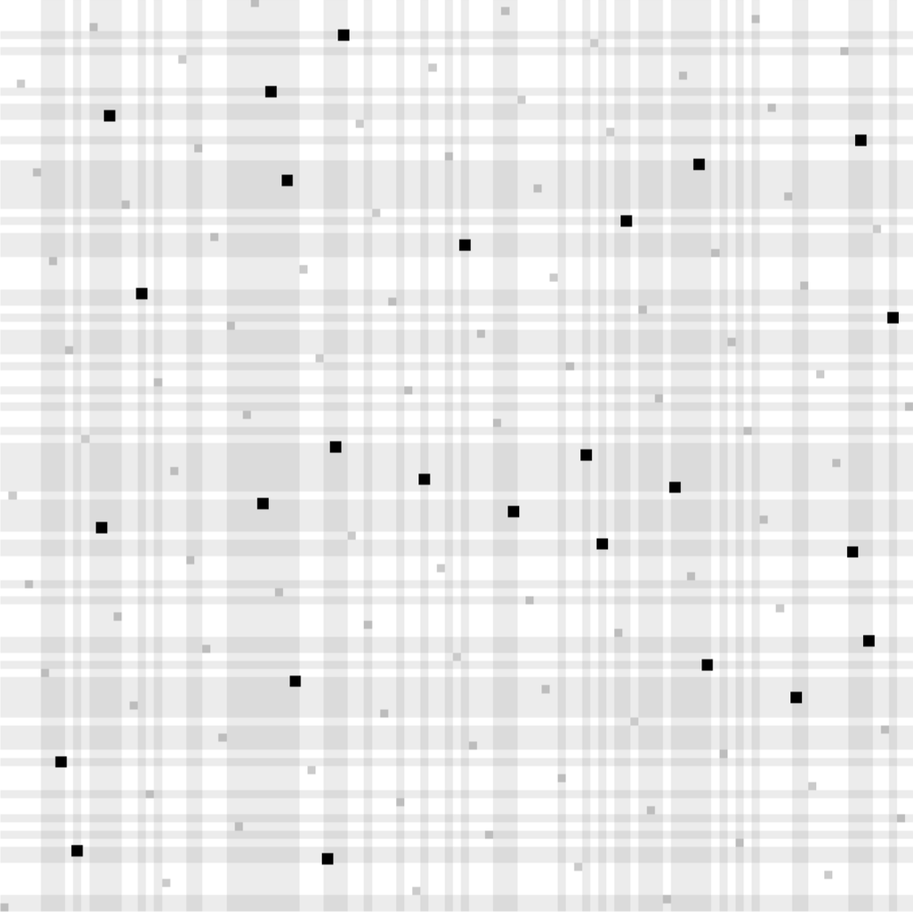

Our construction of a search problem that is easy for quantum computers, but hard for
classical computers. Unlike other known demonstrations of "Quantum Advantage" that
require tools from number theory and public key cryptography, our search problem can
be instantiated from any cryptographic hash function whose outputs are sufficiently
"random looking." See
 . .
| Quantum computers — harnessing the strange features of quantum mechanics such as superpositions, entanglement, etc. — promise to revolutionize computer science. The enhanced computational power of such computers poses major threats to security, and new cryptosystems must be developed and analyzed to resist such threats. On the otherhand, quantum computers offer solutions to never-before-possible tasks, such as certifying random strings, validating the deletion of data, programs that cannot be copied, and more. |
Quantum Money from Abelian Group Actions
|
| ||||||||
|
We give a construction of public key quantum money, and even a strengthened version
called quantum lightning, from abelian group actions, which can in turn be constructed
from suitable isogenies over elliptic curves. We prove security in the generic group
model for group actions under a plausible computational assumption, and develop a
general toolkit for proving quantum security in this model. Along the way, we explore
knowledge assumptions and algebraic group actions in the quantum setting, finding
significant limitations of these assumptions/models compared to generic group actions.
@misc{EPRINT:Zhandry23,
author = {Mark Zhandry}, title = {Quantum Money from Abelian Group Actions}, note = {\url{https://eprint.iacr.org/2023/1097}}, year = {2023} } | |||||||||
Tracing Quantum State Distinguishers via Backtracking
|
|

|

| ||||||
|
We show the following results:
• The post-quantum equivalence of indisitnguishability obfuscation and differing inputs obfuscation in the restricted setting where the outputs differ on at most a polynomial number of points. Our result handles the case where the auxiliary input may contain a quantum state; previous results could only handle classical auxiliary input. • Bounded collusion traitor tracing from general public key encryption, where the decoder is allowed to contain a quantum state. The parameters of the scheme grow polynomially in the collusion bound. • Collusion-resistant traitor tracing with constant-size ciphertexts from general public key encryption, again for quantum state decoders. The public key and secret keys grow polynomially in the number of users. • Traitor tracing with embedded identities in the keys, again for quantum state decoders, under a variety of different assumptions with different parameter size trade-offs. Traitor tracing and differing inputs obfuscation with quantum decoders / auxiliary input arises naturally when considering the post-quantum security of these primitives. We obtain our results by abstracting out a core algorithmic model, which we call the Back One Step (BOS) model. We prove a general theorem, reducing many quantum results including ours to designing \emph{classical} algorithms in the BOS model. We then provide simple algorithms for the particular instances studied in this work.
@inproceedings{C:Zhandry23,
author = {Mark Zhandry}, title = {Tracing Quantum State Distinguishers via Backtracking}, booktitle = {CRYPTO 2023}, year = {2023} } | |||||||||
Commitments to Quantum States
|
| ||||||||
|
What does it mean to commit to a quantum state? In this work, we propose a simple
answer: a commitment to quantum messages is binding if, after the commit phase, the
committed state is hidden from the sender`s view. We accompany this new definition
with several instantiations. We build the first non-interactive succinct quantum state
commitments, which can be seen as an analogue of collision-resistant hashing for
quantum messages. We also show that hiding quantum state commitments (QSCs) are
implied by any commitment scheme for classical messages. All of our constructions can
be based on quantum-cryptographic assumptions that are implied by but are potentially
weaker than one-way functions.
Commitments to quantum states open the door to many new cryptographic possibilities. Our flagship application of a succinct QSC is a quantum-communication version of Kilian`s succinct arguments for any language that has quantum PCPs with constant error and polylogarithmic locality. Plugging in the PCP theorem, this yields succinct arguments for NP under significantly weaker assumptions than required classically; moreover, if the quantum PCP conjecture holds, this extends to QMA. At the heart of our security proof is a new rewinding technique for extracting quantum information.
@inproceedings{STOC:GJMZ22,
author = {Gunn, Sam and Ju, Nathan and Ma, Fermi and Zhandry, Mark}, title = {Commitments to Quantum States}, year = {2023}, publisher = {Association for Computing Machinery}, address = {New York, NY, USA}, pages = {1579–1588}, numpages = {10}, location = {Orlando, FL, USA}, series = {STOC 2023} } | |||||||||
Another Round of Breaking and Making Quantum Money: How to Not Build It from Lattices, and More
|
| ||||||||
|
Public verification of quantum money has been one of the central objects in quantum
cryptography ever since Wiesner's pioneering idea of using quantum mechanics to
construct banknotes against counterfeiting. So far, we do not know any
publicly-verifiable quantum money scheme that is provably secure from standard
assumptions.
In this work, we provide both negative and positive results for publicly verifiable quantum money. • In the first part, we give a general theorem, showing that a certain natural class of quantum money schemes from lattices cannot be secure. We use this theorem to break the recent quantum money scheme of Khesin, Lu, and Shor. • In the second part, we propose a framework for building quantum money and quantum lightning we call invariant money which abstracts some of the ideas of quantum money from knots by Farhi et al.(ITCS'12). In addition to formalizing this framework, we provide concrete hard computational problems loosely inspired by classical knowledge-of-exponent assumptions, whose hardness would imply the security of quantum lightning, a strengthening of quantum money where not even the bank can duplicate banknotes. • We discuss potential instantiations of our framework, including an oracle construction using cryptographic group actions and instantiations from rerandomizable functional encryption, isogenies over elliptic curves, and knots.
@inproceedings{EC:LiuMonZha23,
author = {Jiahui Liu and Hart Montgomery and Mark Zhandry}, booktitle = {EUROCRYPT~2023, Part~I}, editor = {Carmit Hazay and Martijn Stam}, month = apr, pages = {611--638}, publisher = {Springer, Heidelberg}, series = {{LNCS}}, title = {Another Round of Breaking and Making Quantum Money: How to Not Build It from Lattices, and More}, volume = {14004}, year = {2023}, } | |||||||||
A Lower Bound on the Length of Signatures Based on Group Actions and Generic Isogenies
|
| ||||||||
|
We give the first black box lower bound for isogeny-based protocols that can be
described as group actions. We show that, for a large class of signature schemes
making black box use of a (potentially non-abelian) group action, the signature length
must be Ω(λ2/\logλ). Our class of signatures
generalizes all known signatures that derive security exclusively from the group
action, and our lower bound matches the state of the art, showing that the signature
length cannot be improved without deviating from the group action framework.
@inproceedings{EC:BonGuaZha23,
author = {Dan Boneh and Jiaxin Guan and Mark Zhandry}, booktitle = {EUROCRYPT~2023, Part~V}, editor = {Carmit Hazay and Martijn Stam}, month = apr, pages = {507--531}, publisher = {Springer, Heidelberg}, series = {{LNCS}}, title = {A Lower Bound on the Length of Signatures Based on Group Actions and Generic Isogenies}, volume = {14008}, year = {2023}, } | |||||||||
A Computational Separation Between Quantum No-cloning and No-teleportation
|
| ||||||||
|
Two of the fundamental no-go theorems of quantum information are the no-cloning
theorem (that it is impossible to make copies of general quantum states) and the
no-teleportation theorem (the prohibition on sending quantum states over classical
channels without pre-shared entanglement). They are known to be equivalent, in the
sense that a collection of quantum states is clonable if and only if it is
teleportable.
Our main result suggests that this is not the case when computational efficiency is considered. We give a collection of quantum states and oracles relative to which these states are efficiently clonable but not efficiently teleportable. Given that the opposite scenario is impossible (states that can be teleported can always trivially be cloned), this gives the most complete oracle separation possible between these two important no-go properties. In doing so, we introduce a related quantum no-go property, reconstructibility, which refers to the ability to construct a quantum state from a uniquely identifying classical description. We show the stronger result of a collection of quantum states that are efficiently clonable but not efficiently reconstructible. This novel no-go property only exists in relation to computational efficiency, as it is trivial for unbounded computation. It thus opens up the possibility of further computational no-go properties that have not yet been studied because they do not exist outside the computational context.
@misc{NehZha22,
author = {Barak Nehoran and Mark Zhandry}, title = {A Computational Separation Between Quantum No-cloning and No-teleportation}, note = {\url{https://arxiv.org/abs/2302.01858}} year = {2022} } | |||||||||
Full Quantum Equivalence of Group Action DLog and CDH, and More
|
| ||||||||
|
Cryptographic group actions are a relaxation of standard cryptographic groups that
have less structure. This lack of structure allows them to be plausibly quantum
resistant despite Shor's algorithm, while still having a number of applications. The
most famous example of group actions are built from isogenies on elliptic curves.
Our main result is that CDH for abelian group actions is quantumly equivalent to discrete log. Galbraith et al. (Mathematical Cryptology) previously showed perfectly solving CDH to be equivalent to discrete log quantumly; our result works for any non-negligible advantage. We also explore several other questions about group action and isogeny protocols.
@inproceedings{AC:MonZha22,
author = {Hart Montgomery and Mark Zhandry}, booktitle = {ASIACRYPT~2022, Part~I}, editor = {Shweta Agrawal and Dongdai Lin}, month = dec, pages = {3--32}, publisher = {Springer, Heidelberg}, series = {{LNCS}}, title = {Full Quantum Equivalence of Group Action {DLog} and {CDH}, and More}, volume = {13791}, year = {2022} } | |||||||||
Collusion-Resistant Copy-Protection for Watermarkable Functionalities
|
| ||||||||
|
Copy-protection is the task of encoding a program into a quantum state to prevent
illegal duplications. A line of recent works studied copy-protection schemes under
"1 -> 2 attacks": the adversary receiving one program copy can not produce two valid
copies. However, under most circumstances, vendors need to sell more than one copy of
a program and still ensure that no duplicates can be generated. In this work, we
initiate the study of collusion-resistant copy-protection in the plain model. Our
results are twofold:
• For the first time, we show that all major watermarkable functionalities can be copy-protected (including unclonable decryption, digital signatures, and PRFs). Among these, copy-protection of digital signature schemes is not known before. The feasibility of copy-protecting all watermarkable functionalities is an open question raised by Aaronson et al. (CRYPTO' 21) • We make all the above schemes k bounded collusion-resistant for any polynomial k, giving the first bounded collusion-resistant copy-protection for various functionalities in the plain model.
@inproceedings{TCC:LLQZ22,
author = {Jiahui Liu and Qipeng Liu and Luowen Qian and Mark Zhandry}, booktitle = {TCC~2022, Part~I}, editor = {Eike Kiltz and Vinod Vaikuntanathan}, month = nov, pages = {294--323}, publisher = {Springer, Heidelberg}, series = {{LNCS}}, title = {Collusion Resistant Copy-Protection for Watermarkable Functionalities}, volume = {13747}, year = {2022} } | |||||||||
Verifiable Quantum Advantage without Structure
|
| ||||||||
|
We show the following hold, unconditionally unless otherwise stated, relative to a
random oracle with probability 1:
• There are NP search problems solvable by BQP machines but not BPP machines. • There exist functions that are one-way, and even collision resistant, against classical adversaries but are easily inverted quantumly. Similar separations hold for digital signatures and CPA-secure public key encryption (the latter requiring the assumption of a classically CPA-secure encryption scheme). Interestingly, the separation does not necessarily extend to the case of other cryptographic objects such as PRGs. • There are unconditional publicly verifiable proofs of quantumness with the minimal rounds of interaction: for uniform adversaries, the proofs are non-interactive, whereas for non-uniform adversaries the proofs are two message public coin. • Our results do not appear to contradict the Aaronson-Ambanis conjecture. Assuming this conjecture, there exist publicly verifiable certifiable randomness, again with the minimal rounds of interaction. By replacing the random oracle with a concrete cryptographic hash function such as SHA2, we obtain plausible Minicrypt instantiations of the above results. Previous analogous results all required substantial structure, either in terms of highly structured oracles and/or algebraic assumptions in Cryptomania and beyond.
@inproceedings{FOCS:YamZha22,
author = {Takashi Yamakawa and Mark Zhandry}, booktitle = {63rd FOCS}, editor = {}, month = oct # {~/~} # nov, pages = {69--74}, publisher = {{IEEE} Computer Society Press}, title = {Verifiable Quantum Advantage without Structure}, year = {2022} } | |||||||||
New Constructions of Collapsing Hashes
|
|
|
| ||||||
|
Collapsing is the preferred post-quantum security notion for hash functions, needed to
lift many classical results to the quantum setting. Unfortunately, the only existing
standard-model proofs of collapsing hashes require LWE. We construct the first
collapsing hashes from the quantum hardness of any one of the following problems:
• LPN in a variety of low noise or high-hardness regimes, essentially matching what is known for collision resistance from LPN. • Finding cycles on certain exponentially-large expander graphs, such as those arising from isogenies on elliptic curves. • The "optimal" hardness of finding collisions in any hash function. • The polynomial hardness of finding collisions, assuming a certain plausible regularity condition on the hash. As an immediate corollary, we obtain the first statistically hiding post-quantum commitments and post-quantum succinct arguments (of knowledge) under the same assumptions. Our results are obtained by a general theorem which shows how to construct a collapsing hash H' from a post-quantum collision-resistant hash function H, regardless of whether or not H itself is collapsing, assuming H satisfies a certain regularity condition we call "semi-regularity".
@inproceedings{C:Zhandry22c,
author = {Mark Zhandry}, booktitle = {CRYPTO~2022, Part~III}, editor = {Yevgeniy Dodis and Thomas Shrimpton}, month = aug, pages = {596--624}, publisher = {Springer, Heidelberg}, series = {{LNCS}}, title = {New Constructions of Collapsing Hashes}, volume = {13509}, year = {2022} } | |||||||||
On the Feasibility of Unclonable Encryption, and More
|
| ||||||||
|
Unclonable encryption, first introduced by Broadbent and Lord (TQC'20), is a one-time
encryption scheme with the following security guarantee: any non-local adversary
(A, B, C) cannot simultaneously distinguish encryptions of two equal length messages.
This notion is termed as unclonable indistinguishability. Prior works focused on
achieving a weaker notion of unclonable encryption, where we required that any
non-local adversary (A, B, C) cannot simultaneously recover the entire message m.
Seemingly innocuous, understanding the feasibility of encryption schemes satisfying
unclonable indistinguishability (even for 1-bit messages) has remained elusive. We
make progress towards establishing the feasibility of unclonable encryption.
• We show that encryption schemes satisfying unclonable indistinguishability exist unconditionally in the quantum random oracle model. • Towards understanding the necessity of oracles, we present a negative result stipulating that a large class of encryption schemes cannot satisfy unclonable indistinguishability. • Finally, we also establish the feasibility of another closely related primitive: copy-protection for single-bit output point functions. Prior works only established the feasibility of copy-protection for multi-bit output point functions or they achieved constant security error for single-bit output point functions.
@inproceedings{C:AKLLZ22,
author = {Prabhanjan Ananth and Fatih Kaleoglu and Xingjian Li and Qipeng Liu and Mark Zhandry}, booktitle = {CRYPTO~2022, Part~II}, editor = {Yevgeniy Dodis and Thomas Shrimpton}, month = aug, pages = {212--241}, publisher = {Springer, Heidelberg}, series = {{LNCS}}, title = {On the Feasibility of Unclonable Encryption, and More}, volume = {13508}, year = {2022} } | |||||||||
Quantum Algorithms for Variants of Average-Case Lattice Problems via Filtering
|
| ||||||||
|
We show polynomial-time quantum algorithms for the following problems:
• Short integer solution (SIS) problem under the infinity norm, where the public matrix is very wide, the modulus is a polynomially large prime, and the bound of infinity norm is set to be half of the modulus minus a constant. • Extrapolated dihedral coset problem (EDCP) with certain parameters. • Learning with errors (LWE) problem given LWE-like quantum states with polynomially large moduli and certain error distributions, including bounded uniform distributions and Laplace distributions. The SIS, EDCP, and LWE problems in their standard forms are as hard as solving lattice problems in the worst case. However, the variants that we can solve are not in the parameter regimes known to be as hard as solving worst-case lattice problems. Still, no classical or quantum polynomial-time algorithms were known for those variants. Our algorithms for variants of SIS and EDCP use the existing quantum reductions from those problems to LWE, or more precisely, to the problem of solving LWE given LWE-like quantum states. Our main contributions are introducing a filtering technique and solving LWE given LWE-like quantum states with interesting parameters.
@inproceedings{EC:CheLiuZha22,
author = {Yilei Chen and Qipeng Liu and Mark Zhandry}, booktitle = {EUROCRYPT~2022, Part~III}, editor = {Orr Dunkelman and Stefan Dziembowski}, month = may # {~/~} # jun, pages = {372--401}, publisher = {Springer, Heidelberg}, series = {{LNCS}}, title = {Quantum Algorithms for Variants of Average-Case Lattice Problems via Filtering}, volume = {13277}, year = {2022}, } | |||||||||
Post-Quantum Succinct Arguments: Breaking the Quantum Rewinding Barrier
|
| ||||||||
|
We prove that Kilian's four-message succinct argument system is post-quantum secure
in the standard model when instantiated with any probabilistically checkable proof and
any collapsing hash function (which in turn exist based on the post-quantum hardness
of Learning with Errors).
At the heart of our proof is a new "measure-and-repair" quantum rewinding procedure that achieves asymptotically optimal knowledge error.
@inproceedings{FOCS:CMSZ21,
author = {Alessandro Chiesa and Fermi Ma and Nicholas Spooner and Mark Zhandry}, booktitle = {62nd FOCS}, title = {Post-Quantum Succinct Arguments: Breaking the Quantum Rewinding Barrier}, year = {2022}, pages = {49-58}, publisher = {{IEEE} Computer Society}, month = {feb} } | |||||||||
Franchised Quantum Money
|
| ||||||||
|
Quantum computers, which harness the power of quantum physics, offer the potential for
new kinds of security. For instance, classical bits can be copied, but quantum bits,
in general, cannot. As a result, there is interest in creating uncounterfeitable
quantum money, in which a set of qubits can be spent as money but cannot be
duplicated. However existing constructions of quantum money are limited: the
verification key, which is used to verify that a banknote was honestly generated, can
also be used to create counterfeit banknotes. Recent attempts have tried to allow
public key verification, where any untrusted user, even a would-be counterfeiter, can
verify the banknotes. However, despite many attempts, a secure construction of
public-key quantum money has remained elusive.
Here we introduce franchised quantum money, a new notion that is weaker than public key quantum money but brings us closer to realizing it. Franchised quantum money allows any untrusted user to verify the banknotes, and every user gets a unique secret verification key. Further- more, we give a construction of franchised quantum money and prove security assuming the quantum hardness of the short-integer solution problem (SIS). This is the first construction of quantum money that allows an untrusted user to verify the banknotes, and which has a proof of security based on widespread assumptions. It is therefore an important step toward public key quantum money.
@inproceedings{AC:RobZha21,
author = {Bhaskar Roberts and Mark Zhandry}, booktitle = {ASIACRYPT~2021, Part~I}, editor = {Mehdi Tibouchi and Huaxiong Wang}, month = dec, pages = {549--574}, publisher = {Springer, Heidelberg}, series = {{LNCS}}, title = {Franchised Quantum Money}, volume = {13090}, year = {2021} } | |||||||||
Redeeming Reset Indifferentiability and Applications to Post-Quantum Security
|
|
|
| ||||||
|
Indifferentiability is used to analyze the security of constructions of idealized
objects, such as random oracles or ideal ciphers. Reset indifferentiability is a
strengthening of plain indifferentiability which is applicable in far more scenarios,
but has largely been abandoned due to significant impossibility results and a lack of
positive results. Our main results are:
• Under weak reset indifferentiability, ideal ciphers imply (fixed size) random oracles, and domain shrinkage is possible. We thus show reset indifferentiability is more useful than previously thought. • We lift our analysis to the quantum setting, showing that ideal ciphers imply random oracles under quantum indifferentiability. • Despite Shor's algorithm, we observe that generic groups are still meaningful quantumly, showing that they are quantumly (reset) indifferentiable from ideal ciphers; combined with the above, cryptographic groups yield post-quantum symmetric key cryptography. In particular, we obtain a plausible post-quantum random oracle that is a subset-product followed by two modular reductions.
@inproceedings{AC:Zhandry21,
author = {Mark Zhandry}, booktitle = {ASIACRYPT~2021, Part~I}, editor = {Mehdi Tibouchi and Huaxiong Wang}, month = dec, pages = {518--548}, publisher = {Springer, Heidelberg}, series = {{LNCS}}, title = {Redeeming Reset Indifferentiability and Applications to Post-Quantum Security}, volume = {13090}, year = {2021} } | |||||||||
Classical vs Quantum Random Oracles
|
| ||||||||
|
In this paper, we study relationship between security of cryptographic schemes in the
random oracle model (ROM) and quantum random oracle model (QROM). First, we introduce
a notion of a proof of quantum access to a random oracle (PoQRO), which is a protocol
to prove the capability to quantumly access a random oracle to a classical verifier.
We observe that a proof of quantumness recently proposed by Brakerski et al. (TQC '20)
can be seen as a PoQRO. We also give a construction of a publicly verifiable PoQRO
relative to a classical oracle. Based on them, we construct digital signature and
public key encryption schemes that are secure in the ROM but insecure in the QROM. In
particular, we obtain the first examples of natural cryptographic schemes that
separate the ROM and QROM under a standard cryptographic assumption.
On the other hand, we give lifting theorems from security in the ROM to that in the QROM for certain types of cryptographic schemes and security notions. For example, our lifting theorems are applicable to Fiat-Shamir non-interactive arguments, Fiat-Shamir signatures, and Full-Domain-Hash signatures etc. We also discuss applications of our lifting theorems to quantum query complexity.
@inproceedings{EC:YamZha21,
author = {Takashi Yamakawa and Mark Zhandry}, booktitle = {EUROCRYPT~2021, Part~II}, editor = {Anne Canteaut and Fran\c{c}ois-Xavier Standaert}, month = oct, pages = {568--597}, publisher = {Springer, Heidelberg}, series = {{LNCS}}, title = {Classical vs Quantum Random Oracles}, volume = {12697}, year = {2021} } | |||||||||
Hidden Cosets and Applications to Unclonable Cryptography
|
| ||||||||
|
In 2012, Aaronson and Christiano introduced the idea of hidden subspace states to
build public-key quantum money [STOC '12]. Since then, this idea has been applied to
realize several other cryptographic primitives which enjoy some form of unclonability.
In this work, we study a generalization of hidden subspace states to hidden coset
states. This notion was considered independently by Vidick and Zhang [Eurocrypt '21],
in the context of proofs of quantum knowledge from quantum money schemes. We explore
unclonable properties of coset states and several applications:
• We show that, assuming indistinguishability obfuscation (iO), hidden coset states possess a certain direct product hardness property, which immediately implies a tokenized signature scheme in the plain model. Previously, a tokenized signature scheme was known only relative to an oracle, from a work of Ben-David and Sattath [QCrypt '17]. • Combining a tokenized signature scheme with extractable witness encryption, we give a construction of an unclonable decryption scheme in the plain model. The latter primitive was recently proposed by Georgiou and Zhandry [ePrint '20], who gave a construction relative to a classical oracle. • We conjecture that coset states satisfy a certain natural (information-theoretic) monogamy-of-entanglement property. Assuming this conjecture is true, we remove the requirement for extractable witness encryption in our unclonable decryption construction, by relying instead on compute-and-compare obfuscation for the class of unpredictable distributions. As potential evidence in support of the monogamy conjecture, we prove a weaker version of this monogamy property, which we believe will still be of independent interest. • Finally, we give a construction of a copy-protection scheme for pseudorandom functions (PRFs) in the plain model. Our scheme is secure either assuming iO, OWF and extractable witness encryption, or assuming iO, OWF, compute-and-compare obfuscation for the class of unpredictable distributions, and the conjectured monogamy property mentioned above. This is the first example of a copy-protection scheme with provable security in the plain model for a class of functions that is not evasive.
@inproceedings{C:CLLZ21,
author = {Andrea Coladangelo and Jiahui Liu and Qipeng Liu and Mark Zhandry}, booktitle = {CRYPTO~2021, Part~I}, editor = {Tal Malkin and Chris Peikert}, month = aug, pages = {556--584}, publisher = {Springer, Heidelberg}, series = {{LNCS}}, title = {Hidden Cosets and Applications to Unclonable Cryptography}, volume = {12825}, year = {2021} } | |||||||||
New Approaches for Quantum Copy-Protection
|
| ||||||||
|
Quantum copy protection uses the unclonability of quantum states to construct quantum
software that provably cannot be pirated. Copy protection would be immensely useful,
but unfortunately little is known about how to achieve it in general. In this work, we
make progress on this goal, by giving the following results:
• We show how to copy protect any program that cannot be learned from its input/output behavior, relative to a classical oracle. This improves on Aaronson [CCC'09], which achieves the same relative to a quantum oracle. By instantiating the oracle with post-quantum candidate obfuscation schemes, we obtain a heuristic construction of copy protection. • We show, roughly, that any program which can be watermarked can be copy detected, a weaker version of copy protection that does not prevent copying, but guarantees that any copying can be detected. Our scheme relies on the security of the assumed watermarking, plus the assumed existence of public key quantum money. Our construction is general, applicable to many recent watermarking schemes.
@inproceedings{C:ALLZZ21,
author = {Scott Aaronson and Jiahui Liu and Qipeng Liu and Mark Zhandry and Ruizhe Zhang}, booktitle = {CRYPTO~2021, Part~I}, editor = {Tal Malkin and Chris Peikert}, month = aug, pages = {526--555}, publisher = {Springer, Heidelberg}, series = {{LNCS}}, title = {New Approaches for Quantum Copy-Protection}, volume = {12825}, year = {2021} } | |||||||||
Schrödinger's Pirate: How To Trace a Quantum Decoder
|
|
|
| ||||||
|
We explore the problem of traitor tracing where the pirate decoder can contain a
quantum state. Our main results include:
• We show how to overcome numerous definitional challenges to give a meaningful notion of tracing for quantum decoders • We give negative results, demonstrating barriers to adapting classical tracing algorithms to the quantum decoder setting. • On the other hand, we show how to trace quantum decoders in the setting of (public key) private linear broadcast encryption, capturing a common approach to traitor tracing.
@inproceedings{TCC:Zhandry20,
author = {Mark Zhandry}, booktitle = {TCC~2020, Part~III}, editor = {Rafael Pass and Krzysztof Pietrzak}, month = nov, pages = {61--91}, publisher = {Springer, Heidelberg}, series = {{LNCS}}, title = {{Schr{\"o}dinger}'s Pirate: How to Trace a Quantum Decoder}, volume = {12552}, year = {2020} } | |||||||||
Unclonable Decryption Keys
|
| ||||||||
|
We initiate the study of encryption schemes where the decryption keys are unclonable
quantum objects, which we call single decryptor encryption. We give a number of
initial results in this area:
• We formalize the notion of single decryptor encryption. • We show that secret-key single decryptor encryption is possible unconditionally, in the setting where a limited number of ciphertexts are given. However, given an encryption oracle, we show that unconditional security is impossible. • We show how to use a very recent notion of one-shot signatures, together with sufficiently powerful witness encryption, to achieve public key single decryptor encryption. • We demonstrate several extensions of our scheme, achieving a number of interesting properties that are not possible classically.
@misc{EPRINT:GeoZha20,
author = {Marios Georgiou and Mark Zhandry}, howpublished = {Cryptology ePrint Archive, Report 2020/877}, note = {\url{https://eprint.iacr.org/2020/877}}, title = {Unclonable Decryption Keys}, year = {2020} } | |||||||||
Quantum Immune One-Time Memories
|
| ||||||||
|
One-time memories (OTM) are the hardware version of oblivious transfer, and are useful
for constructing objects that are impossible with software alone, such as one-time
programs. In this work, we consider attacks on OTMs where a quantum adversary can
leverage his physical access to the memory to mount quantum "superposition attacks"
against the memory. Such attacks result in significantly weakened OTMs. For example,
in the application to one-time programs, it may appear that such an adversary can
always “quantumize” the classical protocol by running it on a superposition of inputs,
and therefore learn superpositions of outputs of the protocol.
Perhaps surprisingly, we show that this intuition is false: we construct one-time programs from quantum-accessible one-time memories where the view of an adversary, despite making quantum queries, can be simulated by making only classical queries to the ideal functionality. At the heart of our work is a method of immunizing one-time memories against superposition attacks.
@misc{EPRINT:LiuSahZha20,
author = {Qipeng Liu and Amit Sahai and Mark Zhandry}, howpublished = {Cryptology ePrint Archive, Report 2020/871}, note = {\url{https://eprint.iacr.org/2020/871}}, title = {Quantum Immune One-Time Memories}, year = {2020} } | |||||||||
One-shot Signatures and Applications to Hybrid Quantum/Classical Authentication
|
| ||||||||
|
We define the notion of one-shot signatures, which are signatures where any
secret key can be used to sign only a single message, and then self-destructs. While
such signatures are of course impossible classically, we construct one-shot signatures
using quantum no-cloning. In particular, we show that such signatures exist
relative to a classical oracle, which we can then heuristically obfuscate using known
indistinguishability obfuscation schemes.
We show that one-shot signatures have numerous applications for hybrid quantum/classical cryptographic tasks, where all communication is required to be classical, but local quantum operations are allowed. Applications include one-time signature tokens, quantum money with classical communication, decentralized blockchain-less cryptocurrency, signature schemes with unclonable secret keys, non-interactive certifiable min-entropy, and more. We thus position one-shot signatures as a powerful new building block for novel quantum cryptographic protocols.
@inproceedings{STOC:AGKZ20,
author = {Ryan Amos and Marios Georgiou and Aggelos Kiayias and Mark Zhandry}, booktitle = {52nd ACM STOC}, editor = {Konstantin Makarychev and Yury Makarychev and Madhur Tulsiani and Gautam Kamath and Julia Chuzhoy}, month = jun, pages = {255--268}, publisher = {{ACM} Press}, title = {One-shot signatures and applications to hybrid quantum/classical authentication}, year = {2020} } | |||||||||
How to Record Quantum Queries, and Applications to Quantum Indifferentiability
|
|
|
| ||||||
|
The quantum random oracle model (QROM) has become the standard model in which to prove
the post-quantum security of random-oracle-based constructions. Unfortunately, none of
the known proof techniques allow the reduction to record information about the
adversary's queries, a crucial feature of many classical ROM proofs, including all
proofs of indifferentiability for hash function domain extension. In this work, we
give a new QROM proof technique that overcomes this "recording barrier". Our central
observation is that when viewing the adversary's query and the oracle itself in the
Fourier domain, an oracle query switches from writing to the adversary's space to
writing to the oracle itself. This allows a reduction to simulate the oracle by simply
recording information about the adversary's query in the Fourier domain.
We then use this new technique to show the indifferentiability of the Merkle-Damgard domain extender for hash functions. Given the threat posed by quantum computers and the push toward quantum-resistant cryptosystems, our work represents an important tool for efficient post-quantum cryptosystems.
@inproceedings{C:Zhandry19,
author = {Mark Zhandry}, booktitle = {CRYPTO~2019, Part~II}, editor = {Alexandra Boldyreva and Daniele Micciancio}, month = aug, pages = {239--268}, publisher = {Springer, Heidelberg}, series = {{LNCS}}, title = {How to Record Quantum Queries, and Applications to Quantum Indifferentiability}, volume = {11693}, year = {2019} } | |||||||||
Quantum Lightning Never Strikes the Same State Twice
|
|
|
| ||||||
|
Public key quantum money can be seen as a version of the quantum no-cloning theorem
that holds even when the quantum states can be verified by the adversary. In this
work, investigate quantum lightning, a formalization of "collision-free quantum
money" defined by Lutomirski et al. [ICS'10], where no-cloning holds even when the
adversary herself generates the quantum state to be cloned. We then study quantum
money and quantum lightning, showing the following results:
• We demonstrate the usefulness of quantum lightning beyond quantum money by showing several potential applications, such as generating random strings with a proof of entropy, to completely decentralized cryptocurrency without a block-chain, where transactions is instant and local. • We give win-win results for quantum money/lightning, showing that either signatures/hash functions/commitment schemes meet very strong recently proposed notions of security, or they yield quantum money or lightning. Given the difficulty in constructing public key quantum money, this gives some indication that natural schemes do attain strong security guarantees. • We construct quantum lightning under the assumed multi-collision resistance of random degree-2 systems of polynomials. Our construction is inspired by our win-win result for hash functions, and yields the first plausible standard model instantiation of a non-collapsing collision resistant hash function. This improves on a result of Unruh [Eurocrypt'16] that requires a quantum oracle. •We show that instantiating the quantum money scheme of Aaronson and Christiano [STOC'12] with indistinguishability obfuscation that is secure against quantum computers yields a secure quantum money scheme. This construction can be seen as an instance of our win-win result for signatures, giving the first separation between two security notions for signatures from the literature. Thus, we provide the first constructions of public key quantum money from several cryptographic assumptions. Along the way, we develop several new techniques including a new precise variant of the no-cloning theorem.
@inproceedings{EC:Zhandry19b,
author = {Mark Zhandry}, booktitle = {EUROCRYPT~2019, Part~III}, editor = {Yuval Ishai and Vincent Rijmen}, month = may, pages = {408--438}, publisher = {Springer, Heidelberg}, series = {{LNCS}}, title = {Quantum Lightning Never Strikes the Same State Twice}, volume = {11478}, year = {2019} } | |||||||||
On Finding Quantum Multi-collisions
|
| ||||||||
|
A k-collision for a compressing hash function H is a set of k distinct inputs that all
map to the same output. In this work, we show that for any constant k,
Θ(N(1/2)(1-1/(2^k-1))) quantum queries are both necessary and
sufficient to achieve a k-collision with constant probability. This improves on both
the best prior upper bound (Hosoyamada et al., ASIACRYPT 2017) and provides the first
non-trivial lower bound, completely resolving the problem.
@inproceedings{EC:LiuZha19,
author = {Qipeng Liu and Mark Zhandry}, booktitle = {EUROCRYPT~2019, Part~III}, editor = {Yuval Ishai and Vincent Rijmen}, month = may, pages = {189--218}, publisher = {Springer, Heidelberg}, series = {{LNCS}}, title = {On Finding Quantum Multi-collisions}, volume = {11478}, year = {2019}, } | |||||||||
New Security Notions and Feasibility Results for Authentication of Quantum Data
|
| ||||||||
|
We give a new class of security definitions for authentication in the quantum setting.
Our definitions capture and strengthen several existing definitions, including
superposition attacks on classical authentication, as well as full authentication of
quantum data. We argue that our definitions resolve some of the shortcomings of
existing definitions.
We then give several feasibility results for our strong definitions. As a consequence, we obtain several interesting results, including: (1) the classical Carter-Wegman authentication scheme with 3-universal hashing is secure against superposition attacks, as well as adversaries with quantum side information; (2) quantum authentication where the entire key can be reused if verification is successful; (3) conceptually simple constructions of quantum authentication; and (4) a conceptually simple QKD protocol.
@inproceedings{C:GarYueZha17,
author = {Sumegha Garg and Henry Yuen and Mark Zhandry}, booktitle = {CRYPTO~2017, Part~II}, editor = {Jonathan Katz and Hovav Shacham}, month = aug, pages = {342--371}, publisher = {Springer, Heidelberg}, series = {{LNCS}}, title = {New Security Notions and Feasibility Results for Authentication of Quantum Data}, volume = {10402}, year = {2017} } | |||||||||
A Note on Quantum-Secure PRPs
|
| ||||||||
|
We show how to construct pseudorandom permutations (PRPs) that remain secure even if
the adversary can query the permutation on a quantum superposition of inputs. Such
PRPs are called quantum-secure. Our construction combines a quantum-secure
pseudorandom function together with constructions of classical format
preserving encryption. By combining known results, we obtain the first quantum-secure
PRP in this model whose security relies only on the existence of one-way functions.
Previously, to the best of the author's knowledge, quantum security of PRPs had to be
assumed, and there were no prior security reductions to simpler primitives, let alone
one-way functions.
@misc{EPRINT:Zhandry16b,
author = {Mark Zhandry}, howpublished = {Cryptology ePrint Archive, Report 2016/1076}, note = {\url{https://eprint.iacr.org/2016/1076}}, title = {A Note on Quantum-Secure {PRPs}}, year = {2016} } | |||||||||
Quantum Oracle Classification: The Case of Group Structure
|
| ||||||||
|
The Quantum Oracle Classification (QOC) problem is to classify a function, given only
quantum black box access, into one of several classes without necessarily determining
the entire function. Generally, QOC captures a very wide range of problems in quantum
query complexity. However, relatively little is known about many of these problems.
In this work, we analyze the a subclass of the QOC problems where there is a group structure. That is, suppose the range of the unknown function A is a commutative group G, which induces a commutative group law over the entire function space. Then we consider the case where A is drawn uniformly at random from some subgroup A of the function space. Moreover, there is a homomorpism f on A, and the goal is to determine f(A). This class of problems is very general, and covers several interesting cases, such as oracle evaluation; polynomial interpolation, evaluation, and extrapolation; and parity. These problems are important in the study of message authentication codes in the quantum setting, and may have other applications. We exactly characterize the quantum query complexity of every instance of QOC with group structure in terms of a particular counting problem. That is, we provide an algorithm for this general class of problems whose success probability is determined by the solution to the counting problem, and prove its exact optimality. Unfortunately, solving this counting problem in general is a non-trivial task, and we resort to analyzing special cases. Our bounds unify some existing results, such as the existing oracle evaluation and parity bounds. In the case of polynomial interpolation and evaluation, our bounds give new results for secret sharing and information theoretic message authentication codes in the quantum setting.
@article{ARXIV:Zhandry2015,
title={Quantum Oracle Classification - The Case of Group Structure}, author={Mark Zhandry}, journal={ArXiv}, year={2015}, volume={abs/1510.08352} } | |||||||||
Cryptography in the Age of Quantum Computers (PhD Thesis)
|
|
| |||||||
|
It is well established that full-fledged quantum computers, when realized, will
completely break many of today's cryptosystems. This looming threat has led to the
proposal of so-called "post-quantum" systems, namely those that appear resistant to
quantum attacks. We argue, however, that the attacks considered in prior works model
only the near future, where the attacker may be equipped with a quantum computer, but
the end-users implementing the protocols are still running classical devices.
Eventually, quantum computers will reach maturity and everyone — even the end-users — will be running quantum computers. In this event, attackers can interact with the end-users over quantum channels, opening up a new set of attacks that have not been considered before. This thesis puts forth new security models and new security analyses showing how to ensure security against such quantum channel attacks. In particular, we re-build many core cryptographic functionalities, including pseudorandom functions, encryption, digital signatures, and more, resulting in the first protocols that are safe to use in a ubiquitous quantum computing world. Along the way, we resolve several open problems in quantum query complexity, such as the Collision Problem for random functions, the Set Equality Problem, and the Oracle Interrogation Problem. | |||||||||
A Note on the Quantum Collision and Set Equality Problems
|
| ||||||||
|
The results showing a quantum query complexity of Θ(N1/3) for the
collision problem do not apply to random functions. The issues are two-fold. First,
the Ω(N1/3) lower bound only applies when the range is no larger than
the domain, which precludes many of the cryptographically interesting applications.
Second, most of the results in the literature only apply to r-to-1 functions, which
are quite different from random functions.
Understanding the collision problem for random functions is of great importance to cryptography, and we seek to fill the gaps of knowledge for this problem. To that end, we prove that, as expected, a quantum query complexity of Θ(N1/3) holds for all interesting domain and range sizes. Our proofs are simple, and combine existing techniques with several novel tricks to obtain the desired results. Using our techniques, we also give an optimal Ω(N1/3) lower bound for the set equality problem. This new lower bound can be used to improve the relationship between classical randomized query complexity and quantum query complexity for so-called permutation-symmetric functions.
@article{QIC:Zhandry15,
author = {Zhandry, Mark}, title = {A Note on the Quantum Collision and Set Equality Problems}, year = {2015}, issue_date = {May 2015}, publisher = {Rinton Press, Incorporated}, volume = {15}, number = {7–8}, journal = {Quantum Info. Comput.}, month = may, pages = {557–567}, numpages = {11} } | |||||||||
Secure Signatures and Chosen Ciphertext Security in a Quantum Computing World
|
|
|
| ||||||
|
We initiate the study of quantum-secure digital signatures and quantum
chosen ciphertext security. In the case of signatures, we enhance the standard chosen
message query model by allowing the adversary to issue quantum chosen message
queries: given a superposition of messages, the adversary receives a superposition of
signatures on those messages. Similarly, for encryption, we allow the adversary to
issue quantum chosen ciphertext queries: given a superposition of ciphertexts,
the adversary receives a superposition of their decryptions. These adversaries model a
natural post-quantum environment where end-users sign messages and decrypt ciphertexts
on a personal quantum computer.
We construct classical systems that remain secure when exposed to such quantum queries. For signatures we construct two compilers that convert classically secure signatures into signatures secure in the quantum setting and apply these compilers to existing post-quantum signatures. We also show that standard constructions such as Lamport one-time signatures and Merkle signatures remain secure under quantum chosen message attacks, thus giving signatures whose quantum security is based on generic assumptions. For encryption, we define security under quantum chosen ciphertext attacks and present both public-key and symmetric-key constructions.
@inproceedings{C:BonZha13,
author = {Dan Boneh and Mark Zhandry}, booktitle = {CRYPTO~2013, Part~II}, editor = {Ran Canetti and Juan A. Garay}, month = aug, pages = {361--379}, publisher = {Springer, Heidelberg}, series = {{LNCS}}, title = {Secure Signatures and Chosen Ciphertext Security in a Quantum Computing World}, volume = {8043}, year = {2013} } | |||||||||
Quantum-Secure Message Authentication Codes
|
|
| |||||||
|
We construct the first Message Authentication Codes (MACs) that are existentially
unforgeable against a quantum chosen message attack. These chosen message
attacks model a quantum adversary's ability to obtain the MAC on a superposition of
messages of its choice. We begin by showing that a quantum secure PRF is sufficient
for constructing a quantum secure MAC, a fact that is considerably harder to prove
than its classical analogue. Next, we show that a variant of Carter-Wegman MACs can
be proven to be quantum secure. Unlike the classical settings, we present an attack
showing that a pair-wise independent hash family is insufficient to construct a
quantum secure one-time MAC, but we prove that a four-wise independent family
is sufficient for one-time security.
@inproceedings{EC:BonZha13,
author = {Dan Boneh and Mark Zhandry}, booktitle = {EUROCRYPT~2013}, editor = {Thomas Johansson and Phong Q. Nguyen}, month = may, pages = {592--608}, publisher = {Springer, Heidelberg}, series = {{LNCS}}, title = {Quantum-Secure Message Authentication Codes}, volume = {7881}, year = {2013} } | |||||||||
How to Construct Quantum Random Functions
|
|
| |||||||
|
In the presence of a quantum adversary, there are two possible definitions of security
for a pseudorandom function. The first, which we call standard-security, allows the
adversary to be quantum, but requires queries to the function to be classical. The
second, quantum-security, allows the adversary to query the function on a quantum
superposition of inputs, thereby giving the adversary a superposition of the values of
the function at many inputs at once. Existing proof techniques for proving the
security of pseudorandom functions fail when the adversary can make quantum queries.
We give the first quantum-security proofs for pseudorandom functions by showing that
some classical constructions of pseudorandom functions are quantum-secure. Namely, we
show that the standard constructions of pseudorandom functions from pseudorandom
generators or pseudorandom synthesizers are secure, even when the adversary can make
quantum queries. We also show that a direct construction from lattices is
quantum-secure. To prove security, we develop new tools to prove the
indistinguishability of distributions under quantum queries.
In light of these positive results, one might hope that all standard-secure pseudorandom functions are quantum-secure. To the contrary, we show a separation: under the assumption that standard-secure pseudorandom functions exist, there are pseudorandom functions secure against quantum adversaries making classical queries, but insecure once the adversary can make quantum queries.
@inproceedings{FOCS:Zhandry12,
author = {Mark Zhandry}, booktitle = {53rd FOCS}, month = oct, pages = {679--687}, publisher = {{IEEE} Computer Society Press}, title = {How to Construct Quantum Random Functions}, year = {2012} } | |||||||||
Secure Identity-Based Encryption in the Quantum Random Oracle Model
|
|
|
| ||||||
|
We give the first proof of security for an identity-based encryption scheme in the
quantum random oracle model. This is the first proof of security for any
scheme in this model that requires no additional assumptions. Our techniques are quite
general and we use them to obtain security proofs for two random oracle hierarchical
identity-based encryption schemes and a random oracle signature scheme, all of which
have previously resisted quantum security proofs, even using additional assumptions.
We also explain how to remove the extra assumptions from prior quantum random oracle
model proofs. We accomplish these results by developing new tools for arguing that
quantum algorithms cannot distinguish between two oracle distributions. Using a
particular class of oracle distributions, so called semi-constant
distributions, we argue that the aforementioned cryptosystems are secure against
quantum adversaries.
@inproceedings{C:Zhandry12,
author = {Mark Zhandry}, booktitle = {CRYPTO~2012}, editor = {Reihaneh Safavi-Naini and Ran Canetti}, month = aug, pages = {758--775}, publisher = {Springer, Heidelberg}, series = {{LNCS}}, title = {Secure Identity-Based Encryption in the Quantum Random Oracle Model}, volume = {7417}, year = {2012} } | |||||||||
Random Oracles in a Quantum World
|
|
| |||||||
|
The interest in post-quantum cryptography — classical systems that remain
secure in the presence of a quantum adversary — has generated elegant proposals
for new cryptosystems. Some of these systems are set in the random oracle model and
are proven secure relative to adversaries that have classical access to the random
oracle. We argue that to prove post-quantum security one needs to prove security in
the quantum-accessible random oracle model where the adversary can query the random
oracle with quantum state.
We begin by separating the classical and quantum-accessible random oracle models by presenting a scheme that is secure when the adversary is given classical access to the random oracle, but is insecure when the adversary can make quantum oracle queries. We then set out to develop generic conditions under which a classical random oracle proof implies security in the quantum-accessible random oracle model. We introduce the concept of a history-free reduction which is a category of classical random oracle reductions that basically determine oracle answers independently of the history of previous queries, and we prove that such reductions imply security in the quantum model. We then show that certain post-quantum proposals, including ones based on lattices, can be proven secure using history-free reductions and are therefore postquantum secure. We conclude with a rich set of open problems in this area.
@inproceedings{AC:BDFLSZ11,
author = {Dan Boneh and {\"O}zg{\"u}r Dagdelen and Marc Fischlin and Anja Lehmann and Christian Schaffner and Mark Zhandry}, booktitle = {ASIACRYPT~2011}, editor = {Dong Hoon Lee and Xiaoyun Wang}, month = dec, pages = {41--69}, publisher = {Springer, Heidelberg}, series = {{LNCS}}, title = {Random Oracles in a Quantum World}, volume = {7073}, year = {2011} } | |||||||||